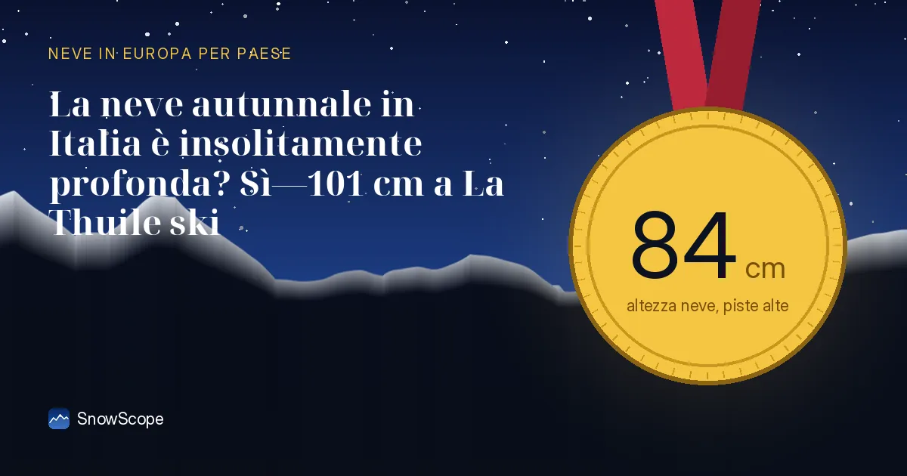
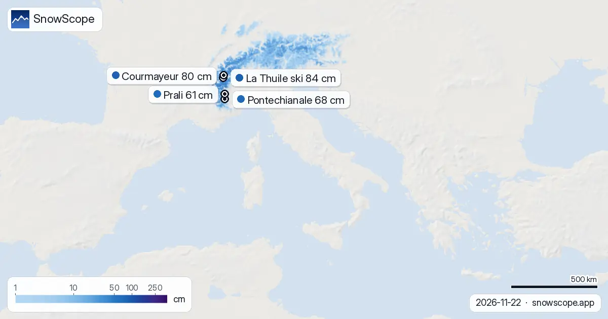

La neve autunnale in Italia è insolitamente profonda? Sì—101 cm a La Thuile ski
Il manto nevoso italiano sta iniziando più profondo del solito questo novembre? Sì. La Thuile ski raggiunge 101 cm—più di tre volte la profondità tipica di fine novembre—rendendo questo un inizio di stagione eccezionalmente raro. La Valle d'Aosta ha catturato la maggior parte della neve recente, con 242 cm accumulati in tre giorni.
Le previsioni neve in tempo reale per La Thuile ski nell'app SnowScopeAltezza neve, allerte powder e mappa 3D, gratis.
Tre volte la profondità normale nelle Alpi
La Thuile ski mantiene 101 cm, una cifra che vediamo in solo uno su dieci inverni passati a questa data. Courmayeur è ancora più profonda a 105 cm. Questi sono numeri anomali per novembre—la media tra cinque resort principali si attesta al 161 percento della norma, significa che la maggior parte sta andando bene al di sopra delle medie di novembre. Il satellite mostra che l'Italia ora ha copertura nevosa su 30.700 km² (in aumento dai 23.550 km² di ieri), un aumento causato quasi interamente dall'accumulo fresco nelle Alpi alte piuttosto che da riscaldamento o fusione inusuale.
| Resort | Today | Normal for the date | Share of normal |
|---|---|---|---|
| La Thuile ski | 101 cm | 30 cm | 337 % |
| Courmayeur | 105 cm | 27 cm | 389 % |
| Pontechianale | 13 cm | 18 cm | 72 % |
| Prali | 29 cm | 18 cm | 161 % |
| Pila ski | 34 cm | 24 cm | 142 % |

Dove è caduta più neve
La Valle d'Aosta è quella più importante: 242 cm negli ultimi 72 ore soli. Le Alpi Piemontesi hanno aggiunto 72 cm nella stessa finestra temporale. In confronto, gli Appennini centrali hanno ricevuto solo 10 cm—un pattern tipico quando i sistemi atlantici spingono verso le Alpi occidentali. Questa concentrazione nel nord alto spiega perché La Thuile ski e Courmayeur guidano il paese, mentre i resort più bassi come Pontechianale (a 68 cm) hanno meno a disposizione. Il limite della neve si attesta a 1.400 m, significa che la maggior parte dei pendii più bassi rimane brunastra.

Neve per quota: la fascia sopra 2.000 m è ben fornita
Il modello mostra che la profondità della neve aumenta nitidamente con l'altitudine. Tra 1.500 m e 2.000 m, la profondità media è 6 cm—frammentaria e sottile. Saltando a 2.000–2.500 m la profondità raggiunge 14 cm con copertura del 98 percento. Sopra 2.500 m, la media è 32 cm e copertura quasi totale al 99 percento. Per gli sciatori, questo significa che devi salire in alto per trovare neve affidabile; sotto 1.500 m, rocce e erba emergeranno.
Cosa viene dopo: altra neve il 25 novembre
Un altro sistema arriva a metà settimana. Il modello prevede fino a 29 cm nei prossimi tre giorni, con 27 cm probabile il 25 novembre. La Valle d'Aosta e il Piemonte vedranno di più. In contrasto, la settimana due (30 novembre–6 dicembre) è prevista più tranquilla, con solo 7 cm attesi—un calo netto. Se il sistema traccia come previsto, i resort sopra 2.000 m guadagneranno profondità utilizzabile; le elevazioni più basse rimangono sottili.
Come questa settimana si classifica
La copertura nevosa dell'Italia ha ampliato di 7.150 km² in un giorno—un balzo sostanziale. Rispetto a sette giorni fa, il paese ha aggiunto 9.410 km² di neve. La linea di tendenza mostra volatilità: la copertura nevosa è scesa a 17.790 km² il 17 novembre, poi è salita costantemente ai 30.700 km² di oggi. Il satellite sta raccogliendo accumulo reale in montagna, non una costruzione graduale, così la neve della prima stagione è relativamente fresca e può essere sottile in alcuni punti.
Vicini: Svizzera e Austria in vantaggio
Oltre confine, la Svizzera mostra copertura bianca del 71 percento (l'Italia è al 33 percento) con Glacier 3000 a 74 cm. L'Austria si attesta al 60 percento di copertura, guidata da Stubaier Gletscher a 67 cm. Entrambi i paesi vedranno più neve questa settimana—Svizzera fino a 49 cm, Austria fino a 25 cm. Il vantaggio dell'Italia in profondità assoluta nei resort alti è reale, ma il quadro regionale mostra che i sistemi atlantici si stanno diffondendo in tutto l'arco alpino.
Consigli per sciatori
- Vai a La Thuile ski o Courmayeur se vuoi la neve più profonda in Italia in questo momento; entrambi sono ben al di sopra di 80 cm a metà montagna. Pianifica di sciare sopra 2.000 m dove il modello mostra neve continua; sotto 1.500 m, la copertura è frammentaria.
- I 27 cm previsti per il 25 novembre spingeranno la profondità più in alto, così se riesci a sciare a metà-fine settimana le condizioni possono migliorare. La neve della prima settimana è di solito più densa e scii meglio dopo un giorno o due.
- Prima di andare fuori pista, controlla il bollettino valanghe ufficiale della regione—la neve fresca su pendii ripidi dopo un'accumulo così rapida comporta rischio. La neve della prima stagione è sottile in molte aree e rocce possono nascondersi sotto.
- I resort più bassi come Pila ski (59 cm) e Pontechianale (68 cm) rimangono molto indietro rispetto ai picchi alti. Se l'accessibilità o l'altitudine è un vincolo, accetta che lo sci di inizio novembre in Italia quest'anno è uno sport di alta montagna.
- Usa la mappa SnowScope per tracciare la copertura sopra 2.000 m nella tua area scelta; il satellite si aggiorna quotidianamente e mostrerà quanta neve sopravvive alla fusione o al vento nei prossimi giorni.
Su questi numeri
Le altezze neve delle località sono la neve più alta sui pendii superiori secondo il modello neve di SnowScope (circa 1 km, calcolo del 22 novembre); sono stime per un'area, non una misura in un punto. I valori delle stazioni sono misure alla data indicata. Le previsioni possono cambiare. Leggi sempre il bollettino valanghe ufficiale prima del fuoripista.
Cita questo articolo
Per ricerca, didattica o stampa: numeri e grafici sono liberamente riutilizzabili con licenza CC BY 4.0 citando così.
SnowScope (2026), La neve autunnale in Italia è insolitamente profonda? Sì—101 cm a La Thuile ski, https://snowscope.app/blog/it/2026/11/italy-rare-early-snow-22-november-2026.html, consultato il 2026-11-22
SnowScope (Atlas Labs). (2026, November 22). La neve autunnale in Italia è insolitamente profonda? Sì—101 cm a La Thuile ski. SnowScope snow reports. https://snowscope.app/blog/it/2026/11/italy-rare-early-snow-22-november-2026.html
BibTeX
@misc{snowscope2026italyrareearlysnow22nove,
author = {{SnowScope (Atlas Labs)}},
title = {La neve autunnale in Italia è insolitamente profonda? Sì—101 cm a La Thuile ski},
year = {2026},
month = nov,
howpublished = {\url{https://snowscope.app/blog/it/2026/11/italy-rare-early-snow-22-november-2026.html}},
note = {Published 2026-11-22 11:02 UTC; accessed 2026-11-22}
}· CC BY 4.0 · Metodi, dati e strumenti →
La Thuile ski: neve e temperatura per quota, quest'inverno vs lo scorso (strumenti) →
Segui La Thuile ski
Gratis: un messaggio quando arriva la neve e il meteo ogni mattina.